Django
Instalación de Python y Django en Linux
Generalmente linux viene con una versión integrada de Python.
python --version
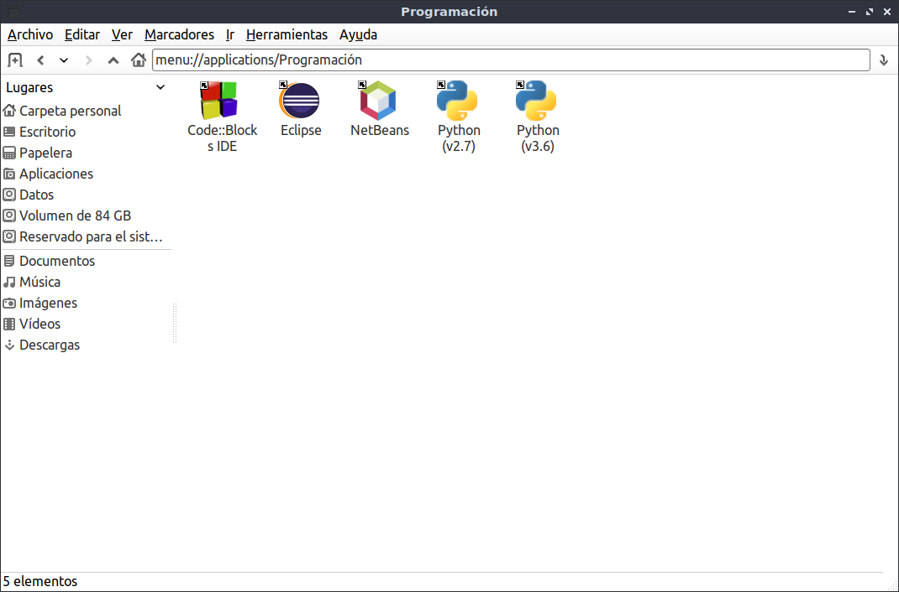
Si quieres instalar una versión en especifico puedes ir a la página oficial de Python y descargar la versión que prefieras. Para descomprimir el archivo.
tar -xvf [nombreComprimido].tgz
Tenemos que compilar python, pero antes de eso tenemos que comprobar que tenemos los paquetes necesarios para realizar esta acción. Para esto utilizamos los siguientes comandos:
sudo apt update
sudo apt install build-essential checkinstall
sudo apt install libreadline-gplv2-dev libncursesw5-dev libssl-dev
sudo apt install libsqlite3-dev tk-dev libgdbm-dev libc6-dev libbz2-dev
sudo apt install python3-dev
Ahora sólo tenemos que compilar python con el siguiente comando
cd [carpetaDePython]
./configure
sudo make install
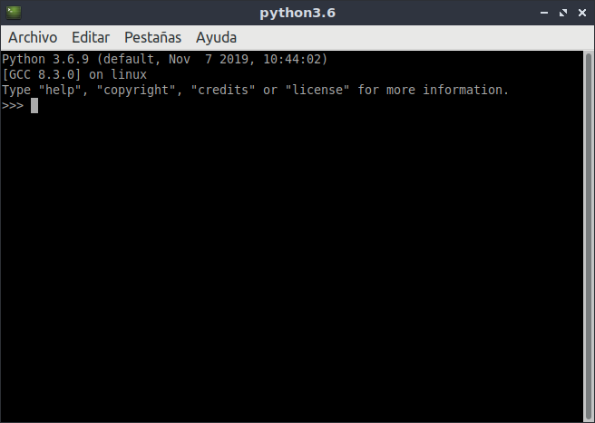
Una vez que ya tenemos python, la instalación de django es más simple.
python -m venv [nombreDeEntorno]
Una vez creado el entorno virtual lo unico que debemos hacer es ejecutar el siguiente comando:
pip install django
Cada que queramos acceder al entorno virtual
source [direccionEntornoVirtual]/bin/activate
Instalación de Python y Django en Windows
Instalar Python en Windows, sólo descargamos el instalador y damos clic en instalar ahora y sólo se instalará.
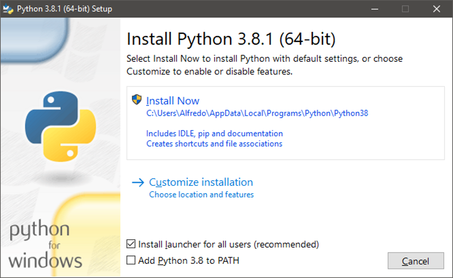
Verificamos la instalación de Python.
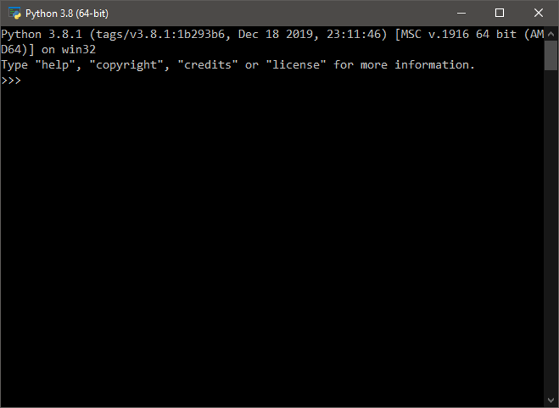
Damos clic derecho en “Mi equipo”, clic en propiedades, después nos mostrar la siguiente vista. Clic en “Configuración avanzada del sistema”.
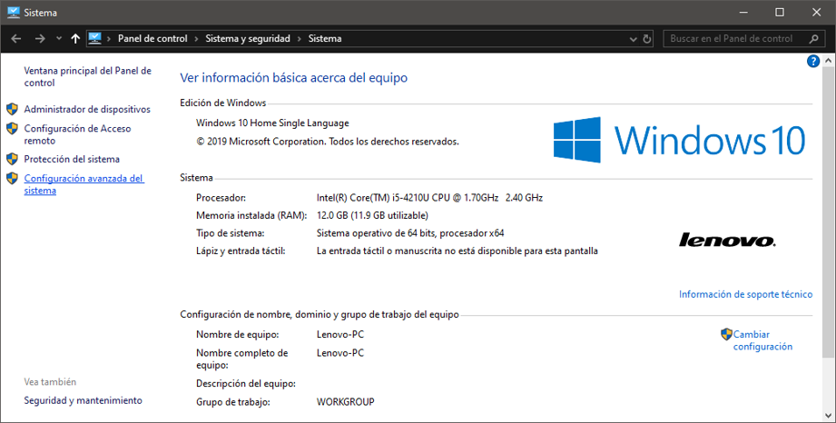
Clic en “Variables de entorno…”.
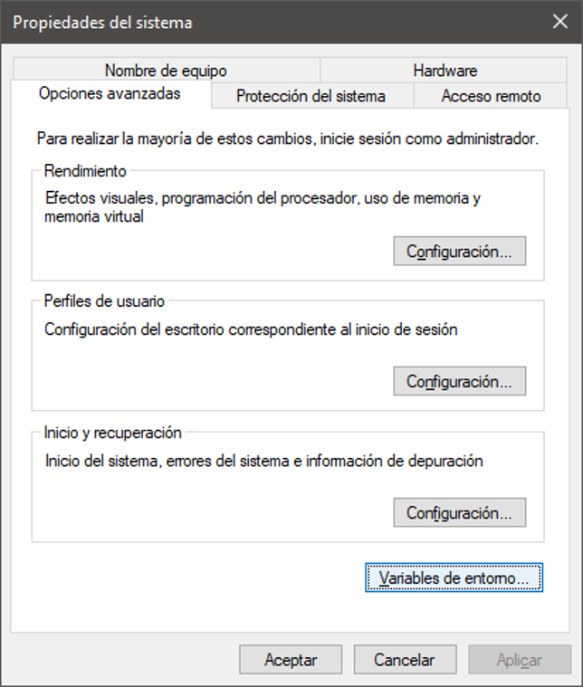
Editamos la variable “Path”.
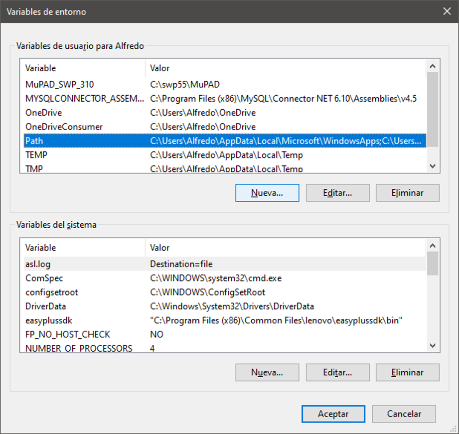
Agregamos la ruta donde se instaló el programo.
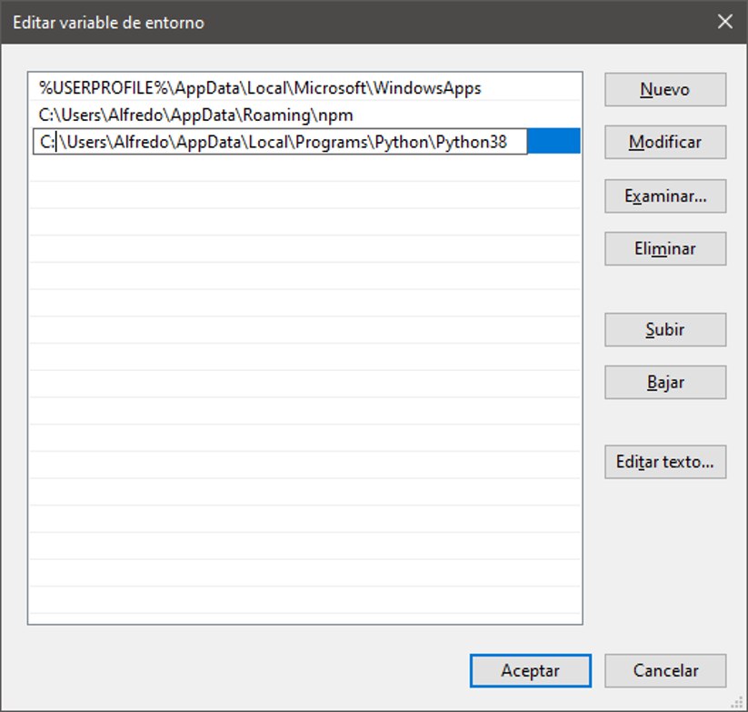
Instalamos Django.
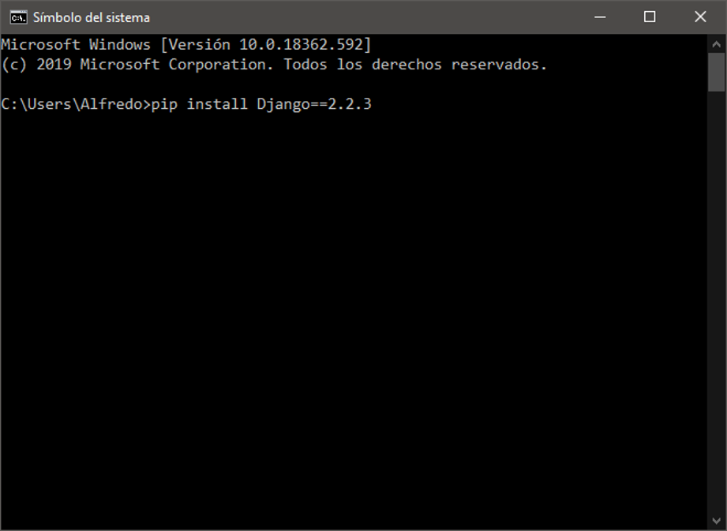
Programa en Django
Se creo un simple Login de un sitio web.
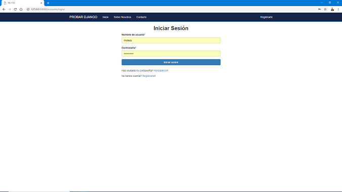
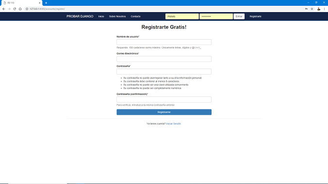